каждая новость дублируется на русском языке после белорусской версии
09.10.2017
закрыццё веласезону і час пешых!
***
закрытие велосезона и время пешых!
13.10, 19.00 Легенды і міфы мінскіх нефармалаў канца 1980-х
(эпатажная велаэкскурсія і сустрэча з паэтам Дз. Строцавым)
15.10, 14-00 Водар Асмалоўкі: пешаходная экскурсія
29.10, 13-00 Мінскія навамучанікі: горад подзвігаў 1920-50-х гадоў

28.09.2017
наш велаверасень/ наш велосентябрь:
30.08, 15.30 Кінавелашпацыр: прэм'ера! (з наведваннем "Беларусьфільма")
31.08, 19.00 Асмалоўка: пешаходная экскурсія
01.09, 18.30 Жыхары мінскага неба: велаэкскурсія з біноклем
04.09, 18.30 Кінавелашпацыр: што і дзе здымалася ў Мінску
06.09, 18.30 ВелаКупала: менскімі сцежкамі паэта
08.09, 20.00 Минск.Лучшее: обзорная велоэкскурсия
15.09, 21.00 Неба над Менскам: зорная экскурсія
20.09, 21.30 Призраки Лошицкого парка: тревожная велоэкскурсия

19.07.2017
расклад на жнівень/ расписание на август:
22.07, 23.00 Неба над Менскам: зорная экскурсія
26.07, 19.00 ПРЭМ'ЕРА! ВелаКупала і не толькі: маршрутамі класікаў па міжваенным Мінску
04.08, 20:00 Минск Вечерний: обзорная велоэкскурсия
09.08, 19:00 Мінск Габрэйскі: кашэрная велаэкскурсія
11.08, 23:00 Неба над Менскам: экскурсія па зорах і сузор'ях
13.08, 22:00 Призраки Лошицкого парка: тревожная велоэкскурсия
14.08, 18.30 Мінск святых навамучанікаў: пешаходная экскурсія
15.08, 19:00 Мінск графа Чапскага (велаэкскурсія)
16.08, 19:00 ВелаКупала: менскімі сцяжынамі класіка
20.08, 12:00 Мінскія прадмесці: Каралішчавічы (загарадная велаэкскурсія)
23.08, 19:00 Мінск Габрэйскі: пешаходная экскурсія
24.08, 18:30 У пошуках менскага Эльдарада (на байдарках з Kayak Minsk)
31.08, 19.00 Асмалоўка: пешаходная экскурсія
канец жніўня: Кінавелаэкскурсія з наведваннем кінастудыі «Беларусьфільм» і кінапраглядам у «Доме Фішара»

23.06.2017
самы гарачы месяц у "Менскага велашпацыра" — як заўжды ЛІПЕНЬ! Наш дах – ужо зрывае, а ваш? Цэлы бардачок прэм'ераў ды эксклюзіваў: новыя гіды, новыя месцы, новыя маршруты! Будзе ВелаЛангбарт і ВелаКупала, будуць зоркі і будуць паўбагі, будуць дахі і будуць выспы, паходзім пешшу, пагойсаем на ровары, паплаваем на байдарках, падыхаем на поўныя лёгкія ў старым парку і адчуем дух вытворчых цэхаў «Мотавела»! Запіс адкрыты! Першыя тры месцы ў групе на ўсе экскурсіі (акрамя байдарачнай) – па 5 рублёў!
***
Самый горячий месяц у "Менскага велашпацыра" — как всегда ИЮЛЬ! Нашу крышу – уже рвёт, а вашу? Целый бардачок премьер и эксклюзивов: новые гиды, новые места, новые маршруты! Будет ВелоЛангбардт и ВелоКупала, будут звёзды и будут полубоги, будут крыши и будут острова; походим пешком, погоняем на великах, поплаваем на байдарках; подышим полными лёгкими в старом парке и прочувствуем дух производственных цехов «Мотовело»! Запись открыта! Первые три места в группе на все* экскурсии (кроме байдарочной) — по 5 рублей!
30.06, 19:00 Минск.Лучшее: обзорная велоэкскурсия (ОТМЕНА)
02.07, 15:00 Минск.Лучшее: обзорная велоэкскурсия
07.07, 15:00 ПРЭМ'ЕРА! 140 велагадоў: роварная гісторыя Мінска, з наведваннем завода "Мотавела"
09.07, 12:00 Минск.Лучшее: обзорная велоэкскурсия
12.07, 18:30 У пошуках менскага Эльдарада: экскурсія на байдарках
12.07, 22:00 Призраки Лошицкого парка: ночная велоэкскурсия
13.07, 19:00 Жыхары мінскага неба: велазнаёмства з манументальнай скульптурай сталічных дахаў
19.07, 19:00 ПРЭМ'ЕРА! Асмалоўка: пешая экскурсія
20.07, 19:00 ПРЭМ'ЕРА! Іосіф Лангбарт: выгнаны архітэктар
22.07, 23.00 Неба над Менскам: зорная экскурсія
26.07, 19.00 ПРЭМ'ЕРА! ВелаКупала і не толькі: маршрутамі класікаў па міжваенным Мінску

06.06.2017
Расклад на чэрвень! Не прапусціце лета!
Расписание на июнь! Не пропустите лето!
06.06, 18:30 ПРЭМ'ЕРА! ПЕРШАЯ ВОДНАЯ ЭКСКУРСІЯ! У пошуках менскага Эльдарада (на байдарках па Свіслачы і Камсамольскім возеры, сумесна з "Kayak Minsk")
09.06, 19:00 Минск.Лучшее: обзорная велоэкскурсия
13.06, 22:00 Таямніцы Лошыцкага парку
16.06, 18:30 Жыхары мінскага неба: знаёмства з манументальнай скульптурай сталічных дахаў
21.06, 23:00 Неба над Менскам: зорная экскурсія (дата ўдакладняецца за тры дні згодна з прагнозам надвор'я!)
25.06, 18:30 Мінск Габрэйскі: экскурсія з доўгімі пэйсамі
30.06, 19:00 Минск.Лучшее: обзорная велоэкскурсия
07.07, (час будзе ўдакладняцца) ПРЭМ'ЕРА! 140 велагадоў: роварная гісторыя Мінска.
19.05.2017
Мы радыя нашаму першаму ў гэтым 4-м сезоне раскладу рэгулярных вела- не толькі- экскурсій! А вы?:)
Мы рады нашему первому в этом 4-м сезоне расписанию регулярных вело- и не только- экскурсий! А вы?:)
:
25(?).05, 23:00 ПРЭМ'ЕРА! Неба над Менскам: вандроўка па зорах і сузор'ях (дакладная дата вызначаецца за некалькі дзён залежна ад прагнозу надвор'я)
26.05, 18.30 «Минск.Лучшее»: обзорная велоэкскурсия
28.05, 13.00 Таямніцы Лошыцкага парка: велаэкскурсія са збоямі ў машыне часу
31.05, 18.30 Мінск Джынсавы: велагісторыя сталічнага біг-біту і рок'н'ролу
07.06, 18:30 ПРЭМ'ЕРА! Экскурсія на байдарках па Свіслачы і Камсамольскім возеры разам з суполкай «Kayak Minsk».
21.04.2017
Адкрыццё веласезона'2017 - 22 красавіка на "Фэсце экскурсаводаў": бясплатная велаэкскурсія "140 велагадоў: роварная гісторыя Мінска". Запіс - на сайце www.fest-guides.by.
***
Открытие велосезона'2017 - 22 апреля на "Фэсце экскурсаводаў"! Бесплатная велоэкскурсия "140 велагадоў: роварная гісторыя Мінска" с посещением завода "Мотовело"! Запись - на сайте www.fest-guides.by.
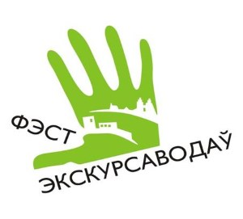
{kind=link}
09.03.2017
Адкрыццё веласезона'2017 - 22-23 красавіка на "Фэсце экскурсаводаў". Сустрэнемся!
***
Открытие велосезона'2017 - 22-23 апреля на "Фэсце экскурсаводаў". Встретимся!
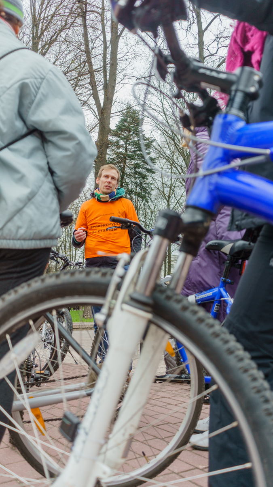
{kind=link}
фота - Іван Мураўёў
16.02.2017
Ізноў ажыятаж і журналісты! Ізноў болей за 200 чалавек на экскурсіі, так што прыйшлося дзяліць групу на дзве часткі! Мы можам толькі працягваць!
18 лютага, 12.00 - бясплатная пешая экскурсія "Культурныя загадкі Трактарагорада" ад літаратара Віктара Жыбуля (месца сустрэчы - выхад з метро "Трактарны завод" на баку МТЗ).
***
И снова ажиотаж и журналисты! И снова более 200 человек на экскурсии, так что пришлось делить группу на две части! Мы можем только продолжать!
18 февраля, 12.00 - бесплатная пешая экскурсия "Культурныя загадкі Трактарагорада" от литератора Виктора Жибуля, место встречи - выход из метро "Трактарны завод", на стороне МТЗ.
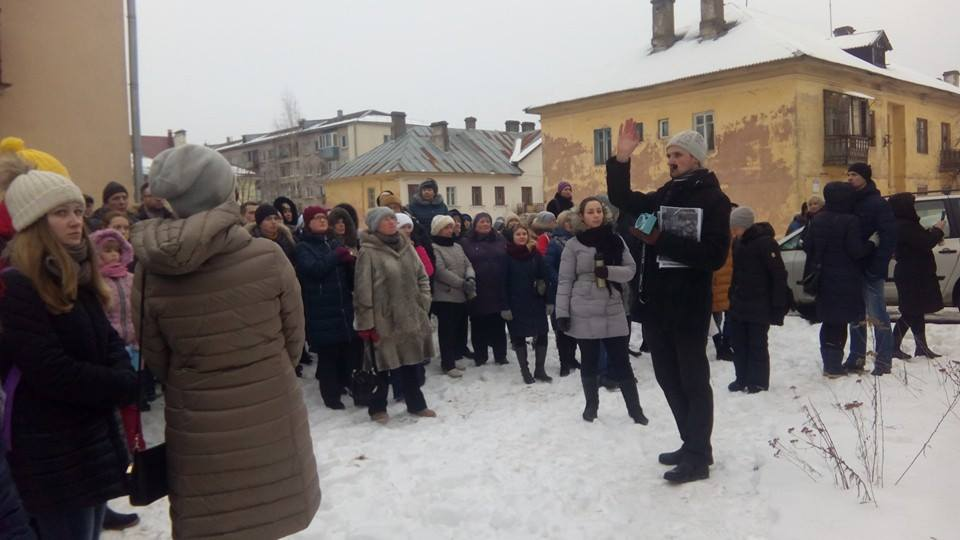
{kind=link}
10.02.2017
У сувязі з небывалым ажыятажам на нашых экскурсіях па Трактарагорадзе 4 лютага (на адну з трох экскурсій прыйшло каля 200 чалавек!) мы вырашылі працягнуць! 12 лютага у 14.00 - бясплатная пешая экскурсія ад экскурсавода Паўла Каралёва (месца сустрэчы - выхад з метро "Трактарны завод" на баку МТЗ)! Чакаем вас !
***
В связи с небывалым ажиотажем на наших экскурсиях по Тракторогороду 4 февраля (на одну из трёх экскурсий пришло около 200 человек!) мы решили продолжить! 12 февраля в 14.00 - бесплатная пешая экскурсия по Тракторогороду от экскурсовода Павла Королёва, место встречи - выход из метро "Трактарны завод", на стороне МТЗ. Ждём вас!
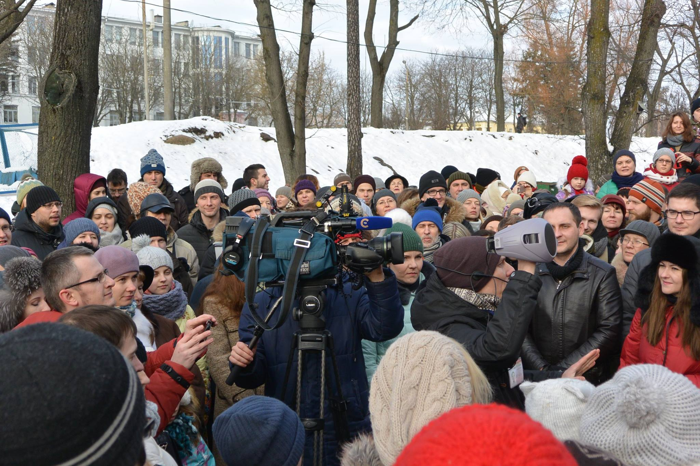
{kind=link}
01.02.2017
Паспець да зносу!
4 лютага адбудуцца экскурсіі "Гісторыі са старога пад'езда: пешы шпацыр па жылым пасёлку Трактарагорада"
месца сустрэчы - выхад з метро "Трактарны завод", на баку МТЗ
10.00 - на французскай мове, 12.30 - на ангельскай, 15.00 - на рускай
***
Успеть до сноса!
4 февраля состоятся экскурсии "Истории из старого подъезда: пешая прогулка по жилому посёлку Тракторного завода"
место встречи - выход из метро "Трактарны завод", на стороне МТЗ
10.00 - на французском языке, 12.30 - на английском, 15.00 - на русском
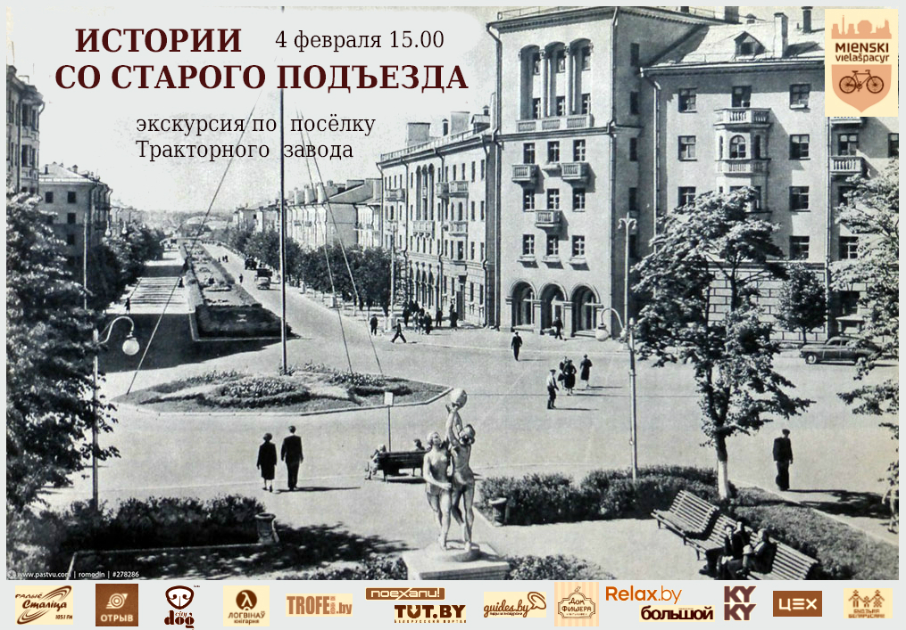
{kind=link}
12.01.2017
Good news from Belarus! Віза ў Беларусь адменена для грамадзянаў 80 краінаў (для 5-дзённага візіту праз аэрапорт "Мінск")! Сябры з Захаду і Ўсходу - сустракайцеся цяпер тут! чакаем вас у госці!
***
Good news from Belarus! Виза в Беларусь отменена (для 5-дневного визита через аэропорт "Минск")! Друзья с Запада и Востока! встречайтесь теперь здесь! Ждём вас в гости!
24.12.2016
У сераду 21 снежня праект "Менскі велашпацыр" быў прэзентаваны на міжнароднай канферэнцыі "Аграэкатурызм'2016: зялёная эканоміка і крэатыўнасць". Крыху больш аб гэтым - як заўжды, у нашых групах Facebook і Вконтакте
***
В среду 21 декабря проект "Менскі велашпацыр" был представлен на конференции "Агроэкотуризм'2016: зелёная экономика и креативность". Немного больше об этом - как всегда - в наших группах Facebook і Вконтакте
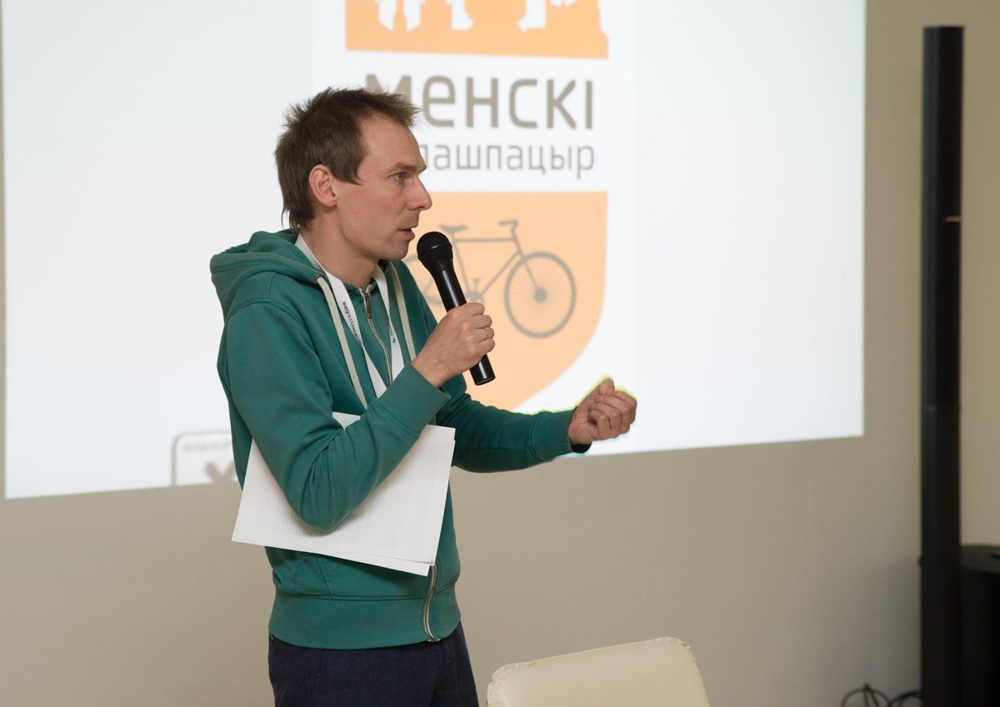
{kind=link}
30.11.2016
Сябры! бліжэйшая нядзеля (4.12) - пад знакам чароўнай Лошыцы! пешаходны экскурсійны шпацыр па заснежаным старым парку - у 14:00 ад брамы насупраць холадакамбіната №2. Чакаем вас!
***
Друзья! ближайшее воскресенье (4.12) - под знаком очаровательной Лошицы! пешеходная экскурсионная прогулка по заснеженному старому парку - в 14:00 от ворот напротив хладокомбината №2. Ждём вас!
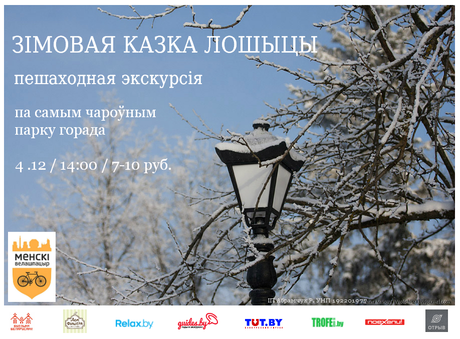
{kind=link}
06.12.2016
Чарговы шпацыр - зноў пешы! 10.12, 11:00 - "Гісторыі са старога пад'езда: пешы шпацыр па пасёлку Трактарнага завода (ад ст.м. Трактарны завод). Прыходзьце!
***
Следующая прогулка - снова пешая! 10.12, 11:00 - "Гісторыі са старога пад'езда: пешы шпацыр па пасёлку Трактарнага завода (от ст.м. Трактарны завод). Приходите!
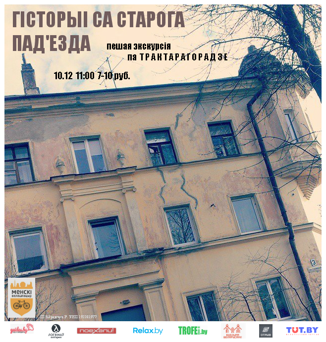
{kind=link}
30.11.2016
Сябры! бліжэйшая нядзеля (4.12) - пад знакам чароўнай Лошыцы! пешаходны экскурсійны шпацыр па заснежаным старым парку - у 14:00 ад брамы насупраць холадакамбіната №2. Чакаем вас!
***
Друзья! ближайшее воскресенье (4.12) - под знаком очаровательной Лошицы! пешеходная экскурсионная прогулка по заснеженному старому парку - в 14:00 от ворот напротив хладокомбината №2. Ждём вас!
22.11.2016
Сябры! пакуль зімна ды слізка - мы прапануем вам далучыцца да серыі нашых пешых вандровак па гістарычных раёнах Мінска: 20.11, 10:30 Кальварыйскія могілкі, 26.11, 13:00 - Мінск Габрэйскі, у выходныя снежня: Сны і будні Трактарагорада і інш. Сачыце за анонсамі!
***
Друзья! пока холодно и скользко - предлагаем вам присоединиться к серии наших пеших прогулок по историческим раёнам Минска: 20.11, 10:30 Кальварыйскія могілкі, 26.11, 13:00 - Мінск Габрэйскі, в выходные декабря: Сны і будні Трактарагорада и др. Следите за анонсами!

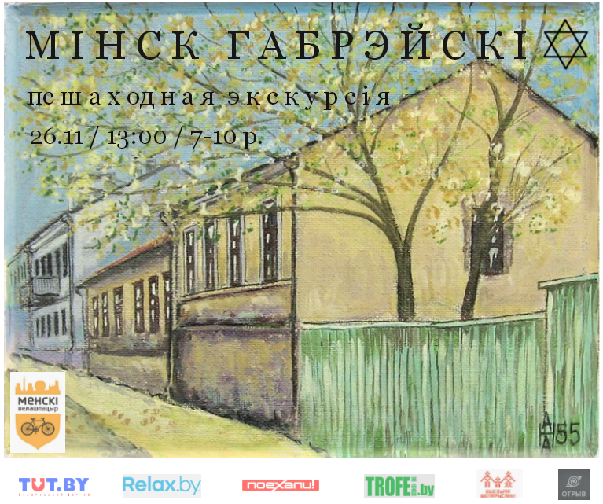
{kind=link}
05.09.2016
Пакрысе, з хуткасцю падаючага лісця, завяршаем сезон...
У кастрычніку'2016 будзе:
***
Постепенно, со скоростью падающей листвы, завершаем сезон...
В октябре'2016 будет:
09.10 (вс) 15:00 "Тайны Лошицкого парка"
17.10 (пн)18:30 "Легенды і міфы мінскіх нефармалаў 1980-х: канон Дз. Строцава" (бясплатна, па запісе)
05.09.2016
Сябры! З пачаткам восені!
Расклад на апошні месяц сезона. Пасля яго - толькі рэдкія эксклюзівы і радасці па прыватнай замове)
***
Друзья! С началом осени!
Вот наше расписание на последний месяц сезона. После него - только редкие эксклюзивы и радости по частным заказам)
02.09 (пт)18:30 "Минск.Лучшее"
05.09 (пн) 18:30 "Вела-чытво: роварны шпацыр да дня беларускага пісьменства" Бясплатна.Па запісе.
06.09 (аўт) 18:15 "Менск у Мінску: па даўніх гарадскіх межах" Эксклюзіў
09.09 (пт) 18:30 "Мінск Габрэйскі" (Аўтарскі маршрут)
13.09 (аўт) 21:00 "Вечаровы Лошыцкі парк"
24.09 (сб) 13:00 "Шлях у Вечнасць: Трасцянец-Благаўшчына-Шашкаўшчына" (Аўтарскі маршрут)
01.08.2016
сябры, добрая навіна! у апошні месяц лета - стос файных роварных экскурсій для вас! аўтарскіх, свежых, класічных! будзем радыя вам!
***
друзья! хорошая новость! в последний день лета - ворох отличных велосипедных экскурсий для вас! авторских, свежых, классических!
07.08 (нядзеля), 22:00 Апоўначы ў Лошыцкім парку: сцежкамі паркавых ценяў. Начная экскурсія
12.08 (пятніца), 18.30 "Мінск Габрэйскі". Аўтарскі маршрут
18.08 (четверг), 18.30 "Минск.Лучшее: обзорная велоэкскурсия"
22.08 (панядзелак), 18.30 "Мінск Экуменічны: па храмах розных рэлігій. Эпізод чацверты." Бясплатна. Аўтарскі маршрут
26.08 (пятніца), 18.30 Жыхары мінскага неба: экскурсія з ўзіраннем увышыню.
27.08 (субота), 13:00 "Шлях у вечнасць" (Благаўшчына-Шашкаўшчына-мемарыял Трасцянец) Прэзентацыя аўтарскага маршрута, прысвечанага гуманітарным катастрофам 1930-40-х гг. Бясплатна.
кошт платных экскурсій - 8 руб. 50 кап.. (папярэдне), 12 руб. - у дзень экскурсіі. Зніжка 20 % усім шпацырантам, якія бралі ўдзел у нашых платных экскурсіях у гэтым сезоне! запіс на бясплатныя экскурсіі пачынаецца за тыдзень! ***
цена платных экскурсий - 8 руб. 50 коп. (предварительно), 12 руб - в день экскурсии. Скидка 20 % всем шпацирантам, которые уже участвовали в наших платных экскурсиях в этом сезоне! запись на бесплатные экскурсии начинается за неделю!
06.07.2016
сябры! наш расклад на ліпень трошкі змяніўся, цяпер ён выглядае вось так:
***
друзья! наше расписание на июль немного поменялось, теперь оно выглядит вот так:
12.07 (mar), 18.30 "A travers Minsk, en français, à vélo": tour de ville en l'honneur de la fête nationale française
(12.07 (ат), 18.30 "Па Мінску, па-французску, на ровары": аглядная велаэкскурсія на французскай мове ў гонар нацыянальнага свята Францыі)
15.07 (пт), 18.30 Минск.Лучшее: обзорная велоэкскурсия
18.07 (пн), 18.30 Мінск Габрэйскі (прэзентацыя маршрута, бясплатна)
19.07 (ат), 18.30 "Я хацеў бы спаткацца з Вамі..." на ровары: менскімі шляхамі Багдановіча
22.07 (пт), 22.00 Паўночныя таямніцы Лошыцкага парка
30.06.2016
а вось і ліпеньскі расклад нашых роварных экскурсій!
***
а вот и июльское расписание наших велосипедных экскурсий!
13.07 (md), 18.30 "A travers Minsk, en français, à vélo": tour de ville en l'honneur de la fête nationale française
(13.07 (ср), 18.30 "Па Мінску, па-французску, на ровары": аглядная велаэкскурсія на французскай мове ў гонар нацыянальнага свята Францыі)
15.07 (пт), 19.00 Тайны Лошицкого парка
18.07 (пн), 18.30 Мінск Габрэйскі (прэзентацыя маршрута, бясплатна)
19.07 (ат), 18.30 "Я хацеў бы спаткацца з Вамі..." на ровары: менскімі шляхамі Багдановіча
21.07 (чв), 18.30 Мінск Экуменічны: богашукальніцкая прыгода. Эпізод чацверты (бясплатна)
22.07 (пт), 22.00 Апоўначы ў Лошыцкім парку: сцежкамі паркавых прывідаў
29.07 (пт), 18.30 Минск.Лучшее: обзорная велоэкскурсия
запіс на бясплатныя экскурсіі пачынаецца за тыдзень да экскурсіі, кошт платнай экскурсіі ў ліпені: 7 (папярэдне) - 10 (на месцы) руб.
запись на бесплатные экскурсии начинается за неделю до экскурсии, цена платной экскурсии: 7 (предварительно) - 10 (на месте) руб.
07.06.2016
сябры! радыя падзяліцца раскладам нашых публічных велаэкскурсій для зборных груп на чэрвень'2016! запіс адкрыты!
***
друзья! рады поделиться расписанием наших публичных велоэкскурсий для сборных групп на июнь'2016! запись открыта!
12.06 (вс), 16.00 Минск.Лучшее (обзорная велоэкскурсия)
12.06 (вс), 20.00 Тайны Лошицкого парка (зелёный маршрут)
17.06 (пт), 18.30 Мінск графа Чапскага
25.06 (сб), 13.00 Мінскія прадмесці: Каралішчавічы (+ мемарыял у Трасцянцы, могілкі вежавых кранаў)
18.05.2016
сябры! аглядная велаэкскурсія "Минск.Лучшее" перанесена з 27-га на 20-га траўня. Пачатак - 18.30. Будзем рады вам!
***
друзья! обзорная велоэкскурсия "Минск.Лучшее" перенесена с 27-го на 20-е мая. Будем рады вам!
02.05.2016
сябры! радыя падзяліцца з вамі раскладам публічных экскурсій на бліжэйшы месяц! запіс адкрыты!
***
друзья! рады поделиться с вами расписанием публичных велоэкскурсий на ближайший месяц! запись открыта!
15.05, 14.00 Тайны Лошицкого парка
24.05, 19.30 Таямніцы Лошыцкага парка
26.05, 18.30 Мінск Джынсавы: гісторыя сталічных хіпі
27.05, 18.30 Минск.Лучшее
31.05, 18.30 Менск гандлёвы
20.04.2016
Шаноўныя! рады падзяліцца з вамі нашым планам на сезон'2016:
Адкрыццё сезона - 23-24 красавіка ў рамках Фэста экскурсаводаў (запіс на экскурсіі - на сайце www.guides.by)
Штомесяц будуць праводзіцца 1-2 экскурсіі "Минск.Лучшее" на рускай мове і 1 экскурсія "Таямніцы Лошыцкага парка" на беларускай / рускай мове. Акрамя таго кожны месяц будзе праводзіцца адзін ці болей тэматычных, аўтарскіх, загарадных маршрутаў на беларускай мове па прыкладным раскладзе, апублікаваным у нашых групах Facebook, Вконтакте. Чакаем вас!
***
Дорогие! рады поделиться с вами нашим планом на сезон'2016:
Открытие сезона - 23-24 апреля в рамках Феста экскурсоводов (запись на экскурсии - на сайте www.guides.by)
Каждый месяц будут проводиться 1-2 экскурсии "Минск.Лучшее" на русском языке и 1 экскурсия "Тайны Лошицкого парка" на беларуском/ русском языках. Кроме того, каждый месяц будет проводится один или более тематических, авторских, загородных маршрутов на беларуском языке по примерному расписанию, опубликованному в наших группах Facebook, Вконтакте. Ждём вас!
20.04.2016
сябры! адкрываем сезон! ужо традыцыйна - разам з Фэстам Экскурсаводаў! у рамках Фэста адбудуцца тры нашыя экскурсіі:
друзья! открываем сезон! уже традиционно - вместе с Фестом экскурсоводов! в рамках фестиваля состоятся три наши экскурсии:
23/04 - 14.00 "Мінскія прадмесці: Каралішчавічы" (экскурсавод - Таццяна Гайдук)
24/04 - 14.00 "Мінскія паўбагі: знаёмства з манументальнай скульптурай мінскіх дахаў" (Раман Абрамчук)
24/04 - 16.00 "Я хацеў бы спаткацца з вамі" на ровары: менскімі шляхамі Багдановіча" (Валянціна Кароткіна)
запіс на экскурсіі - на сайце www.guides.by
20.01.2016
шаноўныя! час "Х" надыйшоў! перажыўшы Каляды - хто на колах, хто пад коламі - мы не можам проста так глядзець праз акно! таму толькі наперад! прапануем вам ЛЫЖНУЮ ЭКСКУРСІЮ
"Зімовая казка Лошыцы"
24 студзеня, 14.00
працягласць - 2 гадзіны
кіламетраж - 9 км.
мова - беларуская
удзел бясплатны, па запісе, колькасць удзельнікаў абмежавана.
***
дорогие! время "Х" настало! пережив новогодние праздники, кто на колёсах, кто под колёсами - мы не можем просто так смотреть в окно! поэтому только вперёд! предлагаем вам ЛЫЖНУЮ ЭКСКУРСИЮ
"Зімовая казка Лошыцы"
24 января, 14.00
продолжительность - 2 часа
километраж - 9 км.
язык - белорусский
участие бесплатное, по записи, количество участников ограничено.
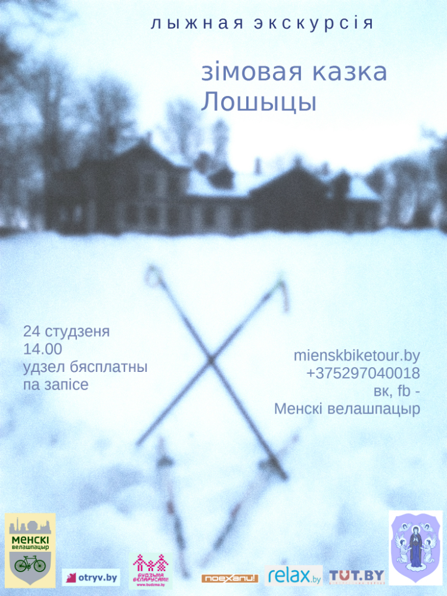
{kind=link}
7.11.2015
сябры! на заканчэнне сезону мы прэзентуем новы маршрут "ВЕЛА1812"! запіс адкрыты!
***
друзья! на завершение сезона мы презентуем новый маршрут "ВЕЛО1812"! запись открыта!
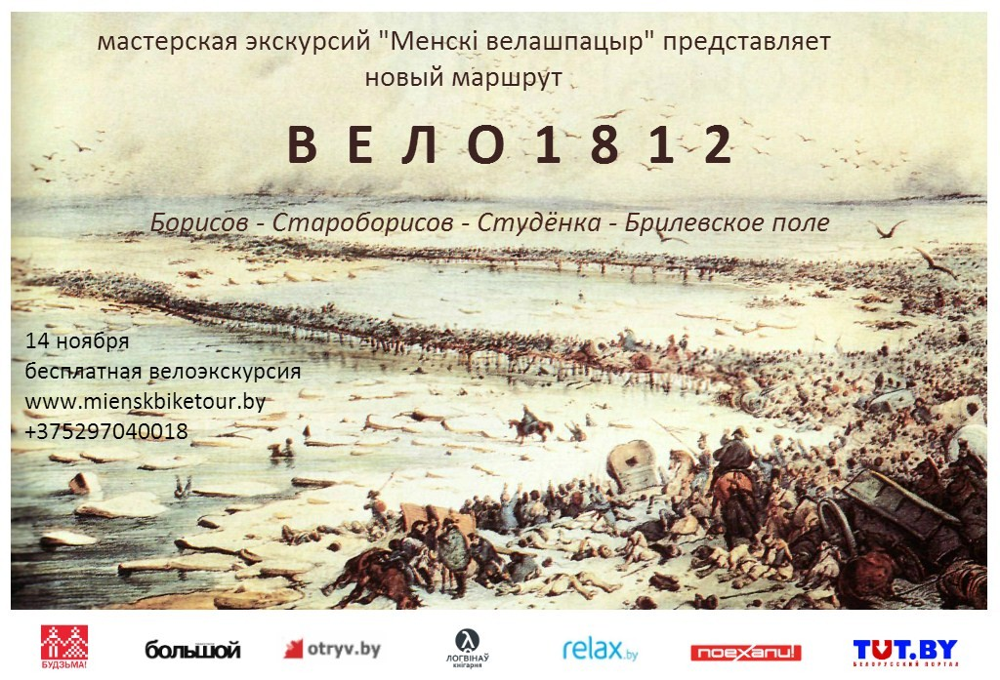
{kind=link}
13.10.2015
шаноўныя! лісцё - на зямлю, а раварыстаў на вуліцах усё меней... на кастрычнік раскладу публічных велаэкскурсій ужо не будзе, але "Менскі велашпацыр" застаецца адкрытым для вашых прыватных і карпаратыўных прапаноў. Усе нашыя аўтарскія, эксклюзіўныя, беларуска-англа-руска-франка-польска-моўныя, загардныя і гарадскія, традыцыйныя і эксперыментальныя, спраўджаныя і авантурныя маршруты - даступныя для вас да зімы з магчымасцю праката ровараў. а закрыццё сезона адбудзецца ў канцы лістапада прэзентацыяй новай загараднай велаавантуры "Уцёкі Напалеона". Сачыце за абвесткамі!
***
дорогие! листья - на землю, а велосипедистов на улицах всё меньше... на октябрь расписания публичных велоэкскурсий уже не будет, но "Менскі велашпацыр" остаётся открытым для ваших частных и корпоративных предложений. Все наши авторские, эксклюзивные, белорусско-англо-русско-франко-польско-язычные, загородные и городские, традиционные и экспериментальные, проверенные и авантюрные маршруты - доступны для вас до зимы с возможностью проката велосипедов. а закрытие сезона состоится в конце ноября презентацией новой загородной велоавантюры "Бегство Наполеона". Следите за анонсами!
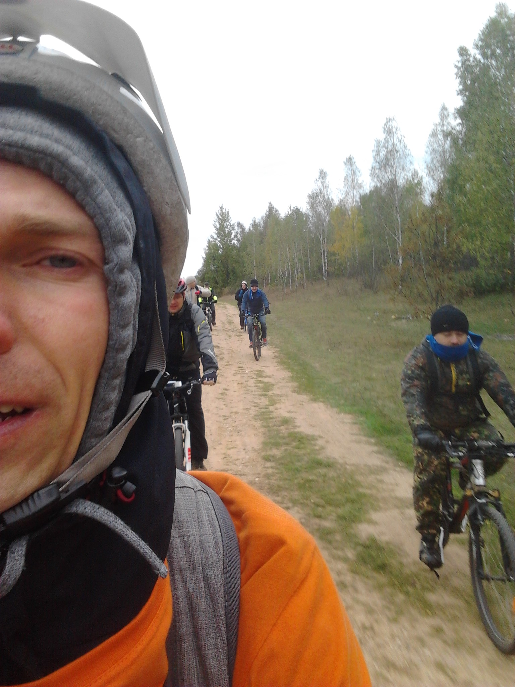
{kind=link}
30.08.2015
расклад на верасень/
расписание на сентябрь:
4.09, пт
"Минск.Лучшее"
(18.30, по-рус.)
5.09, сб
"Мінскія прадмесці:
Каралішчавічы"
(11.00, па-бел.,
загарадная)
20.09, ндз
"Таямніцы
Лошыцкага парка"
(16.00, па-бел.)
22.09, ат
"Па слядах Ваньковічаў"
(18.15, па-бел.)
29.09, ат
"Менск у Мінску:
па даўняй гарадской мяжы"
(18.15, па-бел.)
30.07.2015
сябры, прадстаўляем вам расклад на жнівень!
друзья, представляем вам расписание на август!:
11.08, ат
"Жыхары мінскага неба"
(18.30, па-бел.,
прэм'ера, бясплатна)
13.08, чв
"Таямніцы
Лошыцкага парка"
(19.30, па-бел.)
16.08, ндз
"Жыццё - Айчыне,
гонар - нікому:
па мясцінах Чапскіх
на Міншчыне"
(10.00, па-бел.,
прэм'ера, загарадная)
22.08, сб
"Мінскія прадмесці:
Каралішчавічы"
(11.00, па-бел.,
загарадная)
25.08, ат
"Менск у Мінску:
па даўняй гарадской мяжы"
(18.30, па-бел.,
прэм'ера, бясплатна)
28.08, пт
"Минск.Лучшее"
(18.30, по-рус.)
30.08, ндз
"Таямніцы
Лошыцкага парка"
(12.00, па-бел.)
запіс на бясплатныя экскурсіі пачынаецца за тыдзень!
запись на бесплатные экскурсии начинается за неделю!
6.07.2015
сябры, вось наш расклад на ліпень!
друзья, вот наше расписание на июль!
11 июля, cб
"Минск.Лучшее"
(17.00, по-рус.)
14 ліпеня, ат
"Таямніцы Лошыцкага парка"
(19.30, па-бел.)
le 15 juillet, mcd
"Le meilleur de Minsk"
(18.30, en franс., libre)
18 ліпеня, сб
"Мінскія прадмесці:
Каралішчавічы"
(10.00, прэм'ера,
бясплатна, па-бел.)
20 ліпеня, пн
"Мінск экуменічны"
(18.30, прэм'ера,
бясплатна, па-бел.)
21 ліпеня, ат
"Па слядах Ваньковічаў"
(18.30, прэм'ера,
па-бел.)
30 ліпеня, чв
"Мінск графа Чапскага"
(18.30, па-бел.)
у раскладзе магчымы змены і дадатковыя рэйсы!
в расписании возможны изменения и дополнительные рейсы!
запіс на бясплатныя экскурсіі пачынаецца за тыдзень!
запись на бесплатные экскурсии начинается за неделю!
24.06.2015
сябры! дадатковы рэйс публічнай агляднай велаэкскурсіі "Мінск.Лепшае" на рускай мове - у гэтую суботу, 27-га чэрвеня, у 15-00. далучайцеся!
***
друзья! дополнительный рейс публичной обзорной велоэкскурсии "Минск.Лучшее" на русском языке - в эту субботу, 27-го июня, в 15-00. присоединяйтесь!
17.06.2015
а вось як мы пакаталіся цудоўным дзяньком па Лошыцы 17-га чэрвеня па ініцыятыве французскай амбасады) фоткі можна гартаць!
***
а вот как мы покатались чудесным деньком по Лошице 17-го июня по инициативе французского посольства) фотки можно листать!
17.06.2015
увага! змяніўся час пачатку экскурсіі Мінск.Лепшае ў суботу 20-га чэрвеня. яна пачнецца ў 17-30. чакаем вас!
***
внимание! изменилось время начала экскурсии Минск.Лучшее в субботу 20-го июня. она начнётся в 17-30. ждём вас!
17.06.2015
сябры, новая зніжка! за гэтыя пару месяцаў мы прасеклі, што вы б з намі з радасцю каталіся часцей, каб у вас было грошыкаў паболей. дык вось. кожны, хто ў гэтым сезоне ўжо з'ездзіў з намі ці яшчэ з'ездзіць як мінімум у адну платную публічную вандроўку для зборных груп - атрымлівае 20% зніжку на ўсе астатнія нашыя публічныя экскурсіі ў гэтым сезоне. пры аплаце вам трэба толькі паказаць чэк, альбо, калі ён ужо страчаны - назваць вашае імя і прозвішча, дату і маршрут на якім вы былі. аднак заўважце, што гэтая зніжка не плюсуецца са зніжкай для студэнтаў, пенсіянераў і работнікаў культуры. будзем рады бачыць вас часцей!
***
друзья, новая скидка! за эти пару месяцев мы просекли, что вы бы с радостью катались с нами чаще, если б у вас было денежек побольше. так вот. каждый, кто в этом сезоне уже съездил с нами или ещё съездит как минимум в одну платную публичную поездку для сборных групп - получает скидку 20% на все остальные наши публичные экскурсии в этом сезоне. при оплате вам надо лишь показать чек, или если он утрачен - назвать ваше имя и фамилию, дату и маршрут, на котором вы были. однако заметьте, что эта скидка не плюсуется со скидкой для студентов, пенсионеров, работников культуры. будем рады видеть вас чаще!
29.05.2015
расклад на чэрвень/
расписание на июнь:
9 чэрвеня
"Таямніцы Лошыцкага парка"
(19.30, па-беларуску)
10 чэрвеня
"Мінскія хіпаны"
(18.30, па-беларуску)
11 июня
"Минск.Лучшее"
(18.30, по-русски)
20 июня
"Минск.Лучшее"
(18.30, по-русски)
23 чэрвеня
"Таямніцы Лошыцкага парка"
(19.30, па-беларуску)
27 июня
"Минск.Лучшее"
(15.00, по-русски)
30 чэрвеня
"Менск гандлёвы"
(18.30, па-беларуску)
07.05.2015
сябры, 16 траўня, на Ноч музеяў, разам з Радыё Юністар мы ладзім начную бясплатную велаэкскурсію па Лошыцкім парку! Сачыце за інфармацыяй на Радыё Юністар!
друзья, 16 мая, на Ночь музеев, вместе с Радио Юнистар мы организуем ночную бесплатную велоэкскурсию по Лошицкому парку! Следите за информацией на Радио Юнистар!
06.05.2015
сябры, вашай увазе - расклад травеньскіх вандровак!
друзья, вашему вниманию - расписание майских поездок!
4 Maja
"Mińsk.Najlepsze"
(18:30, po polsku)
16 траўня
"Таямніцы Лошыцкага парка"
(00:00, па-беларуску, разам з Радыё Юністар)
22 мая
"Минск.Лучшее"
(18:30, по-русски)
26 траўня
"Таямніцы Лошыцкага парка"
(20:00, па-беларуску)
28 мая
"Минск.Лучшее"
(18:30, по-русски)
28 мая
"Минск.Лучшее"
(18:30, по-русски)
15.04.2015
Адкрыты запіс на бясплатную велаэкскурсію "Па слядах Ваньковічаў" (прэм'ера)! Вандроўка прысвечана жыццю і творчасці прадстаўнікоў знакамітага мінскага шляхецкага роду Ваньковічаў. 18 красавіка, 15-00, запіс па тэл. 80298969785
***
Открыта запись на бесплатную велоэкскурсию "По следам Ваньковичей" (премьера, по-белорусски)! Путешествие посвящено жизни и творчеству представителей знаменитого минского дворянского рода Ваньковичей. 18 апреля, 15-00, тел. для записи: 80298969785
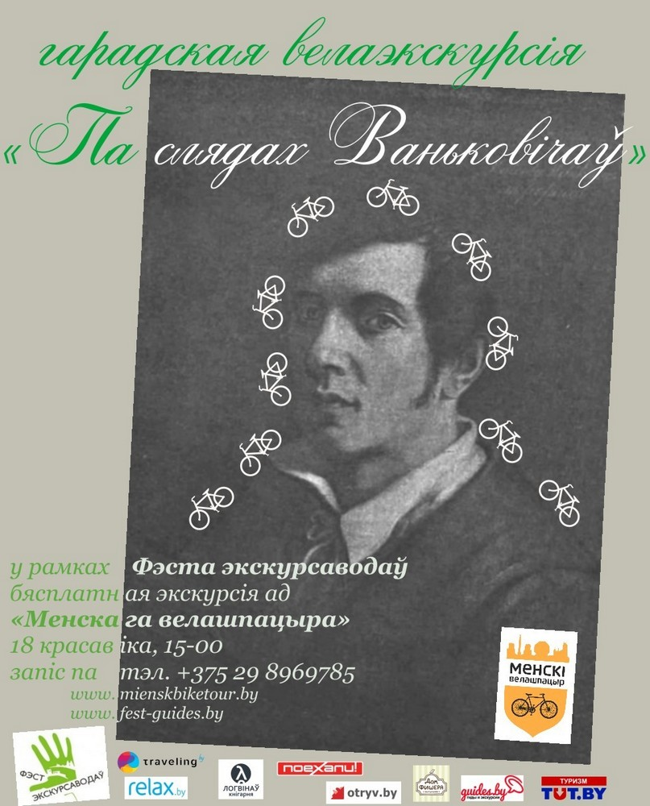
{kind=link}
7.04.2015
сябры, добрая навіна! Менскі велашпацыр адчыняе сезон-2015 ужо зусім хутка - 18 красавіка, на Міжнародны дзень аховы помнікаў і мясцінаў. У рамках Фэста экскурсаводаў (нашых вялікіх сяброў) мы здзейснім наступныя вылазкі: 13-00 - Le meilleur à Minsk (en français), 19-57 - Легенды і міфы мінскіх нефармалаў 1980-х, час удакладняецца - Па слядах Ваньковічаў (прэм'ера). Усе экскурсіі ў гэты дзень - бясплатныя, на першыя два маршруты ўжо можна запісвацца!
***
друзья, хорошая новость! Менскі велашпацыр открывает сезон-2015 уже совсем скоро - 18 апреля, на Международный день охраны памятников. В рамках Феста экскурсоводов (наших больших друзей) мы совершим несколько вылазок: 13-00 - Le meilleur à Minsk (en français), 19-57 - Легенды і міфы мінскіх нефармалаў 1980-х (по-бел.), время уточняется - Па слядах Ваньковічаў (премьера, по-бел.). Все экскурсии в этот день - бесплатные, на первые два маршрута уже можно записываться!
16.03.2015
ну што, зайчаняткі, вылазім з бярлогаў, чысцім пёркі і хвосцікі, жабры і носікі! М-Шпацыр на выходных учыніў сэлфі-пакатушку па родным велабане і ах! столькі новага ўсяго за адну зіму і ўсяго на адной вуліцы - нашай укаханай Кастрычніцкай! іначай і не напішаш - #МенскТырчуАдЦябе!
***
Ну што, зайчики, вылазим из берлог, чистим пёрышки и хвостики, жабры и носики! М-Шпацыр на выходных совершил селфи-покатушку по родному велобану и ах! столько всего нового всего за одну зиму и всего на одной улице - нашей любимой Кастрычніцкай! иначе и не напишешь - #МенскТорчуОтТебя!
07.01.2015
Cябры! шпацыранты! віншуем вас з Калядамі і Божым нараджэннем! Гэты свет кепска сустрэў класнага вандроўніка - Ісуса Хрыста (мы упэўнены, што калі б быў тады ровар - Ён карыстаўся б менавіта ім!)). Гэты свет сустрэў Яго хлевам замест гасцініцы, пераследам замест пашаны. Таму наўрад варта чакаць сюрпрызаў і нам. І таму мы зычым вам не міру, а ўмення захоўваць мір, не поспеху, а моцы дабівацца поспеху, не дабра, а гатоўнасці змагацца за дабро. Жадаем вам здароўя, каб вашыя колы гэтак жа спрытна круціліся і надалей. Новых адкрыццяў і даляглядаў! а мы будзем старацца вам у гэтым дапамагчы ў Новым, 2015-м. Са святам, зімовыя прывітанні ад нашай велакаляднай каманды!)
***
Друзья, шпациранты! поздравляем вас с Колядами и Рождеством! Этот мир плохо встретил классного путешественника - Иисуса Христа (мы уверены, что если бы тогда был велосипед - Он пользовался б имено им!)). Этот мир встретил Его хлевом вместо гостиницы, преследованием вместо почитания. Поэтому вряд ли стоит ждать сюрпризов и нам. И поэтому мы желаем вам не мира, а умения сохранять мир, не успеха, а силы его добиваться, не добра, а готовности бороться за него. Желаем вам здоровья, чтобы ваши колёса так же хорошо крутились и дальше. Новых открытий и горизонтов! а мы будем стараться вам в этом помочь в Новом, 2015-м. С праздником, зимний привет от нашей велоколядной команды!


11.11.2014
сябры, ужо заўтра - нашае эксклюзіўнае велахуліганства - сюр-велаэкскурсія "Легенды і міфы мінскіх нефармалаў 1980-х: Канон Дзмітрыя Строцава"! Спяшайцеся запісацца, месцы яшчэ ёсць!
***
друзья, уже завтра - наше эксклюзивное велохулиганство - сюр-велоэкскурсия "Легенды и мифы минских неформалов 1980-х: канон Дмитрия Строцева"! Спешите записаться, места ещё есть!
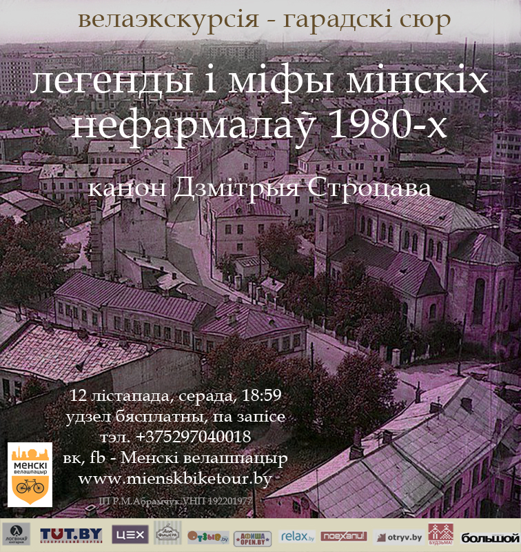
{kind=link}
29.10.2014
сябры, распачаўся запіс на велаэкскурсію на Дзяды! не прапусціце!
***
друзья, началась запись на велоэкскурсию на Дзяды! Не пропустите!
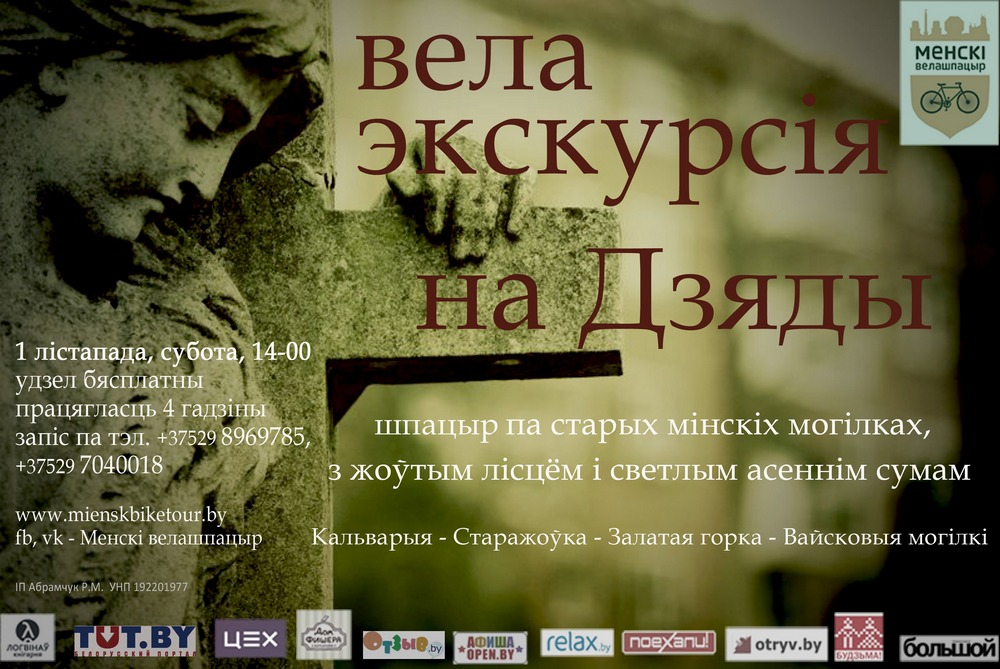
{kind=link}
21.10.2014
сябры, у лістападзе Шпацыр падрыхтаваў вам два веланішцяка: 1) экскурсія па старых мінскіх могілках, прымеркаваная да Дзядоў - дня памінання продкаў і 2) поўная бздура і хуліганства - "Легенды і паданні мінскіх нефармалаў 1980-х: Канон Змітра Строцава". Абедзве экскурсіі - бясплатныя, сачыце за абвесткамі, каб не прапусціць пачатак набору ў групы.
***
друзья, в ноябре Шпацир приготовил для вас два велоништяка: 1) экскурсия по старым минским кладбищам, приуроченная к Дедам - дню поминовения предков и 2) полное хулиганство и беспредел - "Легенды и предания минских неформалов 1980-х: канон Дмитрия Строцева". Обе экскурсии - бесплатныя, следите за объявлениями, чтобы не пропустить начало набора в группы.
30.09.2014
Сябры, вось і сканчваецца сезон. Мы прыпыняем рэгулярныя публічныя экскурсіі для зборных групаў. Аднак раім вам заўжды трымаць руку на нашым пульсе: у нас ёсць некалькі эксклюзіўных вела і не толькі ідэй для гэтай восені і нават зімы. У любым разе - напрацягу восені мы яшчэ будзем адкрыты для прыватных замоваў (экскурсіі магчымы на беларускай, рускай, ангельскай, польскай мовах). Таму не кажам вам бывайце, а ўсяго толькі - пакуль:) Таксама просім вас пакідаць каментары ў нашых групах Facebook і Вконтакте , вашыя ўражанні ад нашых экскурсій, пажаданні на будучы веласезон і г.д. І на астачу - фотачкі ад нашай шпацыранткі Настассі Падарожнай з адной з апошніх нашых экскурсій:
***
Друзья, вот и оканчивается сезон. Мы приостанавливаем регулярные публичные экскурсии для сборных групп. Однако советуем вам всегда держать руку на нашем пульсе: у нас есть несколько эксклюзивных вело- и не только идей для этой осени и даже зимы. В любом случае - на протяжении осени мы ещё будем открыты для частных заказов (экскурсии возможны на белорусском, русском, польском, английском языках). Поэтому мы не прощаемся, а лишь говорим "пока!". Также просим вас оставлять свои впечатления от наших экскурсий, ваши комментарии-пожелания на будущий велосезон в наших группах Facebook и Вконтакте . И напоследок - фоточки с одной из наших последних экскурсий от нашей шпацирантки Анастасии Подорожной:
30.09.2014
11 і 15 верасня адбыліся прэм'еры нашага новага маршруту "Мінск экуменічны". Нас было няшмат, але нашаму любазнаўству пазайздросцілі б першакласнікі:) А менавіта такімі мы сябе і адчувалі на сустрэчы з а. Янам (праваслаўная царква св.Марыі Магдалены), ксяндзом Андрэем (каталіцкі касцёл на Кальварыйскіх могілках), ісламскім маладзёвым актывістам Максадам (мінская саборная мячэць), дыяканам Паўлам Іосіфавічам (царква евангельскіх хрысціянаў-баптыстаў "Галгофа"), а. Антонам (грэка-каталіцкая царква св. Еўфрасінні Полацкай), дырэктарам Юдэйскага рэлігійнага аб'яднання Рыгорам Львовічам (галоўная мінская сінагога). Усім ім, а таксама ўдзельнікам экскурсіі - шчыры дзякуй. Спадзяемся - не ў апошні раз. І фотачкі ад нашай сталай шпацыранткі Іны Бялькевіч - вашай увазе:
***
11 и 15 сентября состоялись премьеры нашего нового маршрута "Минск экуменический". Нас было немного, но нашему любопытству позавидовали б первоклассники:) А именно такими мы себя и ощущали на встрече с о. Иоанном (православная церковь св.Марии Магдалины), ксендзом Андреем (католический костёл на Кальварийском кладбище), исламским молодёжным активистом Максадом (минская соборная мечеть), диаконом Павлом Иосифовичем (церковь евангельских христиан-баптистов "Голгофа"), о.Антоном (греко-католическая церковь св.Евфросиньи Полоцкой), директором Иудейского религиозного объединения Григорием Львовичем (главная минская синагога). Всем им, а также участникам экскурсии - искреннее спасибо. Надеемся, не в последний раз. И фоточки от нашей постоянной шпацирантки Инны Белькевич - вашему вниманию:
12.09.2014
Сябры, экскурсія Мінск.Лепшае 13га верасня ў суботу адменена. Выбачаемся перад тымі, хто збіраўся
Друзья, экскурсия Минск.Лучшее 13го сентября в субботу отменена. Извиняемся перед теми, кто собирался.
16.08.2014
Расклад на верасень (закрыццё сезону)
Расписание на сентябрь (закрытие сезона)
- 3.09, ср., ”Мінскія хіпаны”
(пач. 18-30, 3 гадз., па-беларуску)
- 4.09, чв., ”Менск гандлёвы”
(пач. 18-30, 3 гадз., па-бел.)
- 5.08, пт., «Таямніцы Лошыцкага парку»
(пач. 19-00, 2 гадз., па-бел.)
- 6.09, сб., “Минск.Лучшее”
(нач. 15-30, 2,5 часа, по-русски)
- 8.09, пн., «Мінск графа Чапскага»
(пач. 18-30, 2,5 гадз., па-бел.)
- 11.09, чв., “Мінск экуменічны” (прэм'ера)
(пач. 18-30, 3,5 гадз., па-бел.)
- 13.09, сб., “Минск.Лучшее”
(нач. 15-30, 2,5 часа, по-рус.)
- 20.09, сб., “Минск.Лучшее”
(нач. 15-30, 2,5 часа, по-рус.)
- 27.09, сб., “Минск.Лучшее”
(нач. 15-30, 2,5 часа, по-рус.)
31.07.2014
Расклад на жнівень
Расписание на август
- 2.08, сб. “Минск.Лучшее”,
(нач. 15-30, 2 часа, по-рус.)
- 6.08, ср. «Мінск графа Чапскага»
(пач. 18-30, 2,5 гадз., па-бел.)
- 7.08, чцв. “Як гандлявалі ў Мінску” (прэм'ера, удзел бясплатны, па запісе),
(пач. 18-30, 2 гадз., па-бел.)
- 9.08, сб. «Минск.Лучшее»,
(нач. 15-30, 2 часа, по-рус.)
- 11.08, пн. ”Мінскія хіпаны”,
(пач. 18-30, 3 гадз., па-бел.)
- 13.08, ср., «Таямніцы Лошыцкага парку»
(пач. 19-00, 2 гадз., па-бел.)
- 16.08, сб. «Минск.Лучшее»,
(нач. 15-30, 2 часа, по-рус.)
- 23.08, сб. «Минск.Лучшее»,
(нач. 15-30, 2 часа, по-рус.)
- 30.08, сб. «Минск.Лучшее»,
(нач. 15-30, 2 часа, по-рус.)
07.07.2014
- увага! тым, хто збіраецца на велаэкскурсію ў Лошыцкі парк 9 ліпеня і разлічвае на велапракат "Велатрэк", каля якога прызначана наша сустрэча: на жаль, мы не можам гарантаваць, што велапракат "Велатрэк" будзе адчынены (ну, не склалася ў нас з імі супрацоўніцтва). Аднак мы маем дамоўленасць з іншым велапракатам, які зможа даставіць ровары для нашых шпацырантаў на месца сустрэчы і потым забраць іх з месца заканчэння экскурсіі. Колькасць ровараў - абмежавана, таму варта замовіць ровар загадзя. Кошт - будзе вагацца ад 65,7 да 85 тыс. за дзве гадзіны (дастаўка ўключана) - у залежнасці ад колькасці замоўленых ровараў. Нагадваем, што у заклад за ровар неабходна пакідаць пашпарт. Месца сустрэчы - застаецца тое ж.
***
- внимание! тем, кто собирается на велоэкскурсию в Лошицкий парк 9-го июля и рассчитывает на велопрокат "Велотрек", возле которого назначена встреча: к сожалению, мы не можем гарантировать, что велопрокат будет открыт (ну, не сложилось у нас с ними). Однако у нас есть договорённость с другим велопрокатом, который сможет доставить велосипеды нашим шпацирантам на место встречи и потом забрать их с места окончания экскурсии. Количество велосипедов - ограничено, поэтому стоит заранее заказать велосипед. Цена будет колебаться от 67,5 тыс. до 85 тыс. за 2 часа (доставка включена) - в зависимости от количества заказанных велосипедов. Напоминаем, што в залог за велосипед необходимо оставлять паспорт. Место встречи - остаётся то же.
01.07.2014
- сябры, звяртаем увагу, што традыцыйнай суботняй экскурсіі "Мінск.Лучшее" у гэтую суботу 5-га ліпеня не будзе: Шпацыраняты бягуць прэч з мілітарызаванага, хоць і любімага Мінска ў леса-балотным напрамку. Па гэтай жа прычыне з намі нельга будзе звязацца да нядзелі 6-га ліпеня.
- друзья, обращаем ваше внимание, что традиционной субботней экскурсии "Минск.Лучшее" в эту субботу 5-го июля не будет: Шпацирята бегут прочь из милитаризированного, хоть и любимого Минска в лесо-болотном направлении. По этой же причине с нами нельзя будет связаться до воскресенья 6-го июля.
27.06.2014
- маршрут "Таямніцы Лошыцкага парка" становіцца рэгулярным. Запрашаем, ужо 9-га ліпеня! Апісанне маршрута, умовы ўдзелу.
- маршрут "Тайны Лошицкого парка" становится регулярным. Приглашаем, уже 9-го июля! Описание маршрута, условия участия.
- Сябры, прэзентуем вам караценькую фота-замалёўку нашай велапрэм'еры "Таямніцы Лошыцкага парка". Дзякуем за фота Іне Бялькевіч.
- Друзья, презентуем вам краткую фото-зарисовку нашей велопремьеры "Тайны Лошицкого парка". Благодарим за фото Инну Белькевич.
27.06.2014
а вось і наш ліпеньскі календарык рэгулярных экскурсій:
а вот и наш июльский календарик регулярных экскурсий:
- 9.07, ср. «Таямніцы Лошыцкага парка»
(пач. 19-30, 2 гадз., па-бел.)
- 12.07, сб. “Минск.Лучшее”
(нач. 15-30, 2 часа, по-рус.)
- 19.07, сб. «Минск.Лучшее»
(нач. 15-30, 2 часа, по-рус.)
- 23.07, ср. ”Мінскія хіпаны”
(пач. 18-30, 3 гадз., па-бел.)
- 26.07, сб. «Минск.Лучшее»
(нач. 15-30, 2 часа, по-рус.)
- 30.07, ср., «Мінск графа Чапскага»
(пач. 18-30, 2,5 гадз., па-бел.)
!звярніце ўвагу: рэгулярнай суботняй экскурсіі "Мінск.Лепшае" 5 ліпеня - не будзе.
!обратите внимание: регулярной субботней экскурсии "Минск.Лучшее" 5 июля - не будет.
19.06.2014
- сябры, увага! змяняецца дата і час правядзення велаэкскурсіі "Таямніцы Лошыцкага парка". Яна адбудзецца 23 чэрвеня (панядзелак), пачатак - 20-00. выбачаемся за нязручнасці. экскурсія на беларускай мове, бясплатная, запіс адкрыты, месцы яшчэ ёсць.
- друзья, внимание! изменилось время проведения велоэкскурсии "Тайны Лошицкого парка". Она состоится 23 июня (понедельник), начало - 20-00. извиняемся за неудобства. экскурсия на белорусском языке, бесплатная, запись открыта, места ещё есть.
27.05.2014
а вось і склаўся наш календарык публічных рэгулярных экскурсій на наступны месяц, запрашаем!
а вот и сложился наш календарик публичных регулярных экскурсий на следующий месяц, приглашаем!
- 7.06, сб. «Минск.Лучшее», нач. 12-30 и 15-30, 2 часа, по-русски
- 11.06,ср. “Мінскія хіпаны”, пач. 18-30, 3 гадз., па-беларуску
- 14.06, сб. «Минск.Лучшее», нач. 12-30 и 15-30, 2 часа, по-русски
- 18.06,ср. «Мінск графа Чапскага», пач. 18-30, 2,5 гадз., па-беларуску
- 21.06, сб. «Минск.Лучшее», нач. 12-30 и 15-30, 2 часа, по-русски
- 25.06,ср. ”Таямніцы Лошыцкага парка”, пач. 20-30, 1,5 гадз.,па-беларуску (бясплатна, па запісе)
- 28.06, сб. «Минск.Лучшее», нач. 12-30 и 15-30, 2 часа, по-русски
!звярніце ўвагу: у чэрвені зменіцца кошт суботніх рэгулярных экскурсій "Мінск.Лепшае", яна складзе 75 тбр. з 1 асобы.
!обратите внимание: в июне изменится цена субботних регулярных экскурсий "Минск.Лучшее", она составит 75 тбр. с 1 человека.
13.05.2014
Друзья! экстра-рейс публичной обзорной экскурсии "Минск.Лучшее" - в эту пятницу 16 мая, старт - 19-00. хэй!
7.05.2014
сябры, у гэтую суботу, 10-га траўня, рэгулярныя публічныя экскурсіі пройдуць у эксперыментальным скарочаным рэжыме: кожная з іх будзе цягнуцца дзве гадзіны. Рэч у тым, што мы на практыцы хочам знайсці найбольш прымальны для турыстаў варыянт, як у сэнсе працягласці экскурсіі так і ў сэнсе яе агульнага кошту для тых, каму патрэбна яшчэ браць ровар напракат. Нягледзячы на скарочанасць, маршрут захавае самыя яркія, знакавыя, цікавыя мясціны горада. Пачатак - як і звычайна - 10-30 і 14-30.
***
Друзья, в эту субботу, 10-го мая, регулярные публичные экскурсии пройдут в экспериментальном сокращённом режиме: каждая из них продлится 2 часа. Дело в том, что мы ищем наиболее оптимальный для туристов вариант экскурсии, как в смысле её продолжительности, так и в смысле её общей цены для тех, кто вынужден брать велосипед напрокат. Несмотря на сокращённость, маршрут сохранит самые ценные, яркие и знаковые места города. Начало - как обычно - в 10-30 и 14-30. Ждём вас!
29.04.2014
Шчыра дзякуем усім удзельнікам экскурсіі "Мінск.Лепшае", якая адбылася 25-га красавіка, у тым ліку за файныя фоткі (дзякуем Аляксандру Няхайчыку і Іне Бяльковіч), якія можна паглядзець у нашых групах Вк і Фб. А ўсім паведамляем яшчэ раз, што суботнія аглядныя экскурсіі "Минск.Лучшее" (па-руску) будуць пачынацца а 10-30 і 14-30. Экскурсіі "Мінск графа Чапскага" і "Мінскія хіпаны" (адпаведна 29 і 30 траўня) пачнуцца а 18-30. Чакаем вас!
***
Искренне благодарим всех участников экскурсии "Минск.Лучшее", которая состоялась 25-го апреля, в том числе и за отличные фотки (спасибо Александру Нехайчику и Инне Белькович), которые можно увидеть в наших группах Вк и Фб. А всем ещё раз напоминаем, что регулярные экскурсии "Минск.Лучшее" по субботам будут начинаться в 10-30 и 14-30, а экскурсии "Минск графа Чапского" и "Минские хиппаны" (по белорусски) соответсвенно 29 и 30 мая начнутся в 18-30. Ждём вас!
14.04.2014
- Ура! "Менскі велашпацыр" хутка стартуе! 3-га траўня - адкрыццё рэгулярных публічных экскурсій. Вось наш расклад на травень:
25 красавіка (пятніца), 18-00 - аглядная дэма-экскурсія "Мінск.Лепшае" (бясплатна, па запісе)
з 3 траўня пачынаючы, а 10-30 і 14-30 - па дзве аглядныя экскурсіі "Мінск.Лепшае" штосуботу.
29 траўня (чацвер), 18-30, Мінск графа Чапскага
30 траўня (пятніца), 18-30, Мінскія хіпаны
усе умовы - у апісанні экскурсій.
Чакаем вас, аматары ровараў і Мінска!
***
- Ура! "Менскі велашпацыр" скоро стартует! 3-го мая - начало регулярных публичных экскурсий.
25 апреля (пятница), 18-00 - обзорная демо-экскурсия (бесплатно, по записи)
начиная с 3 мая, в 10-30 и 14-30 - каждую субботу, по две обзорные экскурсии "Минск.Лучшее"
29 мая (четверг), 18-30 - Минск графа Чапского
30 мая (пятница), 18-30 - Минские хиппаны
все условия - в описании экскурсий.
Ждём вас, любители велосипедов и Минска!